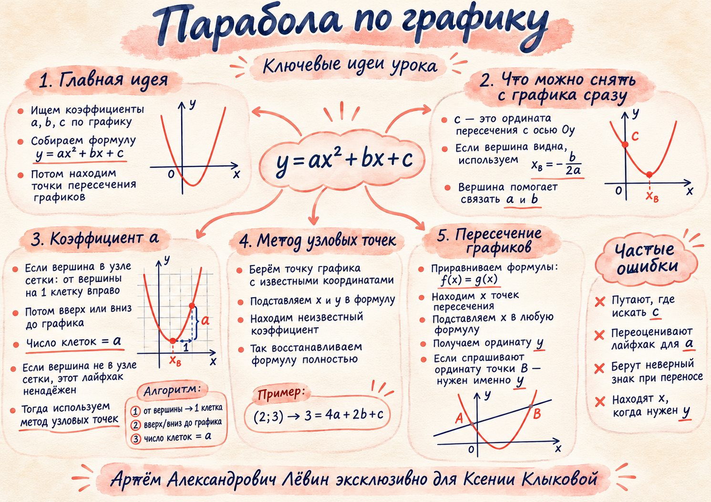

01. Вершина и свободный коэффициент
По графику g(x) = ax² + bx + c определите a, b, c, запишите функцию и найдите её нули.
Показать ответ
a = 1, b = −2, c = −3; g(x) = x² − 2x − 3; x = −1 или x = 3.
ЕГЭ · профильная математика / 04.11.2026
Как восстановить коэффициенты квадратичной функции по точкам графика, выбрать точный способ и найти обе координаты пересечения двух графиков.
Квадратичная функция задаётся формулой g(x) = ax² + bx + c, где a ≠ 0. Её график — парабола.
| Коэффициент | Что показывает график |
|---|---|
| a | Знак задаёт направление ветвей: при a > 0 они идут вверх, при a < 0 — вниз. |
| c | Ордината пересечения с осью Oy: c = g(0). |
| b | Связан с абсциссой вершины: xв = −b/(2a). |
Здесь V(h; k) — вершина параболы. Её абсцисса h задаёт ось симметрии x = h.
Подставим x = h + 1 в формулу с вершиной:
Поэтому от вершины можно сдвинуться вправо на одну единицу и измерить изменение высоты до графика. Для ветвей вниз разность отрицательна.
Тождество верно и при дробном h. Графический приём надёжен только когда вершина и соседняя точка читаются точно. Если значения приходится угадывать, переходите к узловым точкам.
Вершина V(1; −4), парабола проходит через (0; −3). Тогда g(x) = a(x − 1)² − 4, из −3 = a − 4 получаем a = 1.
Итог: g(x) = x² − 2x − 3.
Проверить смещение на графике ↗Выберите три точки параболы с точно известными координатами. Для каждой используйте равенство y = ax² + bx + c. Получится система уравнений на a, b, c.
Точки (−2; 1), (0; −3), (1; 1) дают c = −3 и систему:
Из неё a = 2, b = 2. Получаем g(x) = 2x² + 2x − 3; абсцисса вершины равна −1/2.
В любой общей точке значения функций совпадают, поэтому f(x) = g(x).
Если f(x) = 5x + 9, g(x) = x² + x − 3, то x² − 4x − 12 = 0. Получаем x = −2 или x = 6.
Точки: (−2; −1) и (6; 39).
Когда просят ординату точки B, найденное значение x ещё не завершает задачу.
Исследовать пересечения ↗Координатные сетки построены по формулам исходного чек-листа. Одна клетка соответствует одной единице по обеим осям. Сначала решите задачу самостоятельно; ответ раскрывается отдельно.
По графику g(x) = ax² + bx + c определите a, b, c, запишите функцию и найдите её нули.
a = 1, b = −2, c = −3; g(x) = x² − 2x − 3; x = −1 или x = 3.
Восстановите формулу показанной параболы и вычислите g(1).
g(x) = −2x² − 4x + 1; g(1) = −5.
Пунктиром показана прямая f(x) = x + 1, сплошной линией — g(x) = ax² + bx + c. Восстановите g, найдите обе точки пересечения и ординату правой точки B.
g(x) = x² − 2x + 1; A(0; 1), B(3; 4); ордината B равна 4.
Используйте три узловые точки, найдите коэффициенты параболы, запишите её формулу и решите g(x) = 1.
a = 2, b = 2, c = −3; g(x) = 2x² + 2x − 3; x = −2 или x = 1.
Одна парабола задана формулой f(x) = 2x² − 8x + 5, вторая — g(x) = ax² + bx + c. Определите, какой линии соответствует f, восстановите g по узловым точкам и найдите ординату правой точки пересечения B.
f — сплошная; g(x) = x² − 3x + 1; B(4; 5), ордината B равна 5.
| Условие | Действие |
|---|---|
| c | Найдите пересечение с осью Oy. |
| V(h;k) | Запишите g(x) = a(x − h)² + k. |
| Шаг +1 | Если точки читаются точно, a = g(h+1) − k. |
| Узлы | Подставьте три точки в y = ax² + bx + c. |
| Два графика | Решите f(x) = g(x) и найдите нужное y. |
